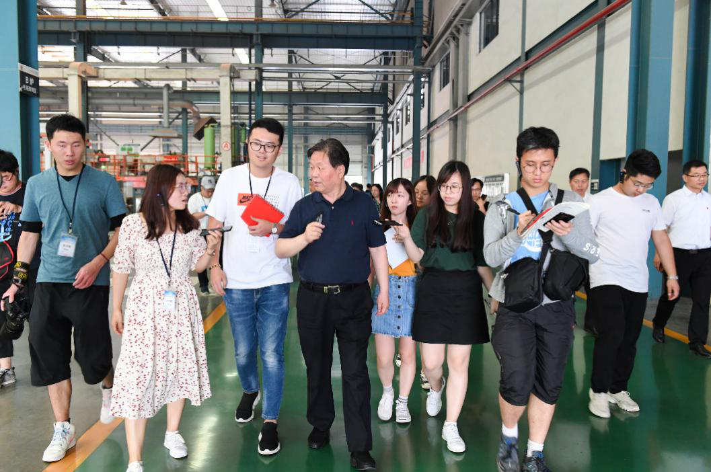

6月17日，来自香港浸会大学、香港树仁大学、香港公开大学、香港珠海学院、郑州大学、河南大学等多所高校的24名传媒学子组成的“范长江行动——2019香港传媒学子中原行”采访团走进中原内配，考察中原内配国际化发展路径，感受河南工业经济开放的广度、融入世界的深度和发展的速度。集团董事长薛德龙带领这些“准记者”参观、了解中原内配的“国际化”发展历程和智能制造实施成果。
在企业展厅的“荣誉墙”、“笑脸墙”、“专利墙”前，董事长详细介绍了中原内配的主营业务、研发实力、品牌信誉和战略合作伙伴。学子们围在董事长周围，一边聆听、拍照、记录，一边争相提出各种问题。当问到中美贸易战对企业的影响时，董事长十分自信，表示美国这样打贸易战叫伤敌八百，自损一千！我们和美国汽车发动机企业的合作是建立在相互信赖、合作共赢基础上，很多都是一二十年的互信关系，不是说换就能换的，更何况我们将积极开发其它国际市场，保持发展方向不变，目标不变，持续提升产品供货份额和品牌影响力。
采访团走进铸造四厂和缸套七厂的自动化、智能化生产线，现场感受中原内配先进的制造工艺以及智能制造带来的巨大变革。学子们一路走一路跟着董事长，争相提出自己的问题，相机闪烁、手笔不停，记录着看到的、听到的中原内配发展图景和奋进故事，真切感受中原内配在“一带一路”倡议下蓬勃发展的生机和活力。同时，中原内配先进的发展理念和一流的制造工艺也让学子们感叹，香港珠海学院司徒雪莹表示，原来汽车发动机的零部件这么漂亮，更没想到我们日常生活物品的背后有那么多人在努力研发，有这么现代化的生产方式，觉得挺酷的。
走出缸套七厂，学子们意犹未尽，就在道路旁边，再次围绕住董事长追问中原内配取得如今的发展成就有何经验，企业员工忠诚度的秘诀是什么，企业社会责任在哪些方面体现等等。在职工餐厅，学子们一边就餐，一边继续提问。董事长一一耐心回答，并希望学子们不负此行，最后与采访团愉快合影。
6月24日，香港大公报刊登了此次采访，并单独发文报道对董事长的专访，向社会展示中原内配的国际化成果、智能制造进程以及在中美贸易战中的发展自信，刊登了董事长在企业展厅向学子们介绍集团产品在发动机中应用的大照片，同时，还通过对孟州市领导、公司干部、管理人员、后勤人员的采访反映中原内配带动社会就业、员工收入增长和福利政策以及董事长的领导风范，透过中原内配的发展向社会展示中部崛起的蓬勃态势。
